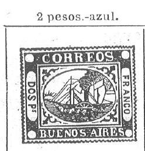
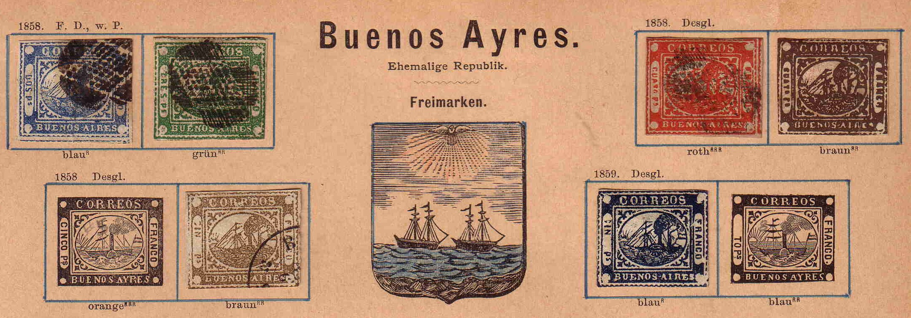
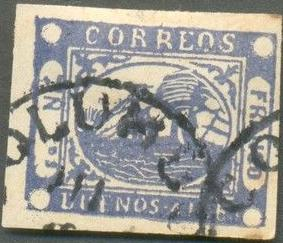

(Probably genuine stamps)
Buenos Ayres
Return To Catalogue - Buenos Aires 1858 forgeries part 1 - Buenos Aires 1858 issue - Argentine
Note: on my website many of the
pictures can not be seen! They are of course present in the
catalogue;
contact me if you want to purchase it.
Buenos Aires 1858 forgeries part 1
ATTENTION, MANY OF THE STAMPS OF BUENOS AIRES ARE FORGERIES OR REPRINTS!
(Probably genuine stamps)


Forgery with '5 PS' inscription instead of 'CINCO PS'. This is
the first forgery of the Cinco Ps type described in the book
Album Weeds. Also a '4 Ps' blue forgery made by the same forger.
A similar forgery with inscription '2 Ps' is also mentioned in
Album Weeds.


German stamp album with images of forged stamps in the bottom
left and bottom right (also, as far as I can judge, genuine
stamps).


Highly dubious stamp, nevertheless sold for 360 US$ on Ebay. The
stamp next to it with cancel is a forgery and likely made by the
same forger(?). Both stamps appear to be engraved. An image of
this forgery appears in the above shown German stamp album as
well.


Weird item, no sun, 'DOS P' written upside down etc. '. This
forgery even exists with perforation.

Forgery with bad lettering, no outer frameline and cancel
'COLUMBO'?


Another forgery type


Other dubious 'reprints'; Note that the same scratches and
defects appear in all values.

I've been told that this is a reprint, but it looks more like a
forgery to me (note for example the rays on the sun). This
forgery is identical to the image provided in the John Edward
Gray 'The Illustrated Catalogue of Postage Stamps' of 1870 on
page 109 (see image above). This forgery can also be found in the
catalogue of Placido Ramon de Torres
"Album Illustrado para Sellos de Correo" of 1879
(information passed to me thanks to Gerhard Lang, 2016) on page
171 (see last image).


Probably reprints?


Forgeries on forged letters. Note that the handwriting in the
address is the same.
The forger Oswald Schroeder made forgeries of at least the values 3 p green, 4 p red and 5 p yellow (orange), according to the Peplow book.
Click here for stamps of Buenos Aires issued in 1860 and miscellaneous.

{kind=link}
{kind=link}
{kind=link}